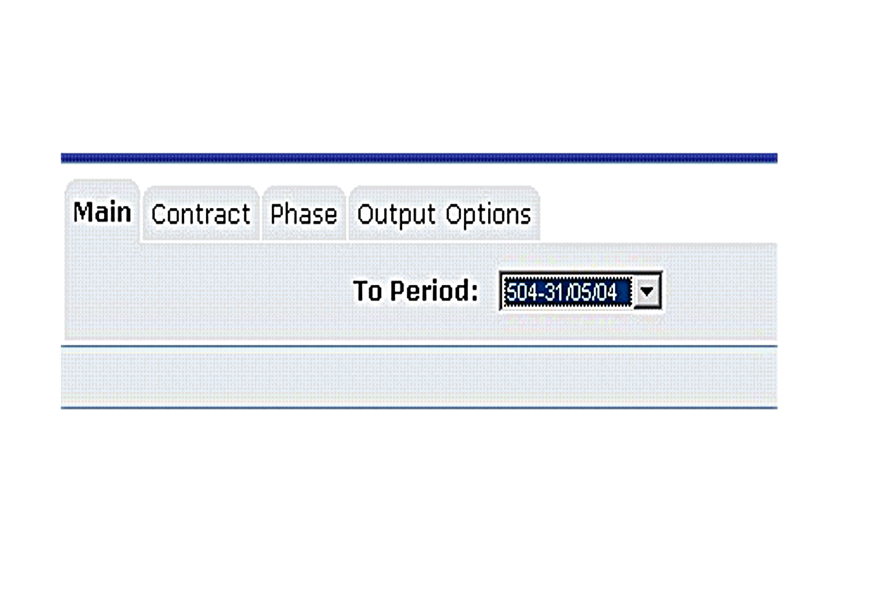

Some of the fields available on
This means that a parameter should be used when calling the field in order for it to return values. Example:
The field: ?RO_job_costs^<PeriodType>[|<PeriodOffset>[|<FDate>]]? on the jc_job table uses parameters to return values.
jc_job.RO_job_costs ^TD|0|\
Will use the
If the user enters:

The system would convert this to:
jc_job.RO_job_costs ^TD|0|31/05/04
Therefore the query would return costs up to 31/05/04
Please check the Database
In the same fashion RS_fields runtime values can be passed unto calculations. Example:
substring$("\
Where the field \
.